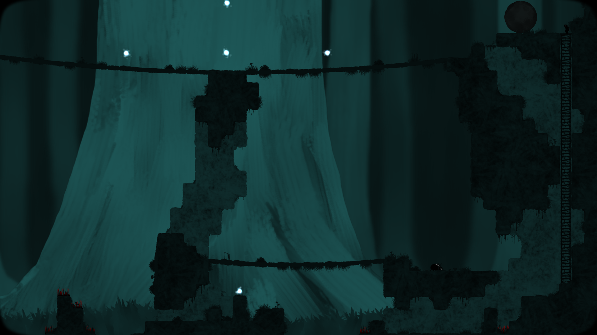
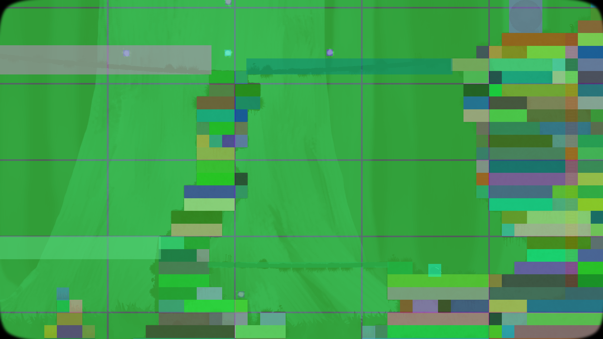

An AS3 / Starling module to handle automatic spatial game objects activation & deactivation.
Alternative content

This interactive demo shows the library running in debug mode. The scene is mainly composed by:
Basically, a spatial chunk (or cell) is active when it touches directly the active area. When a spatial element (or game object) touches an active spatial chunk, it becomes active and transfers its activity to all the other touched spatial chunks. Spatial elements are then sort of activity bridges over spatial chunks. Through this activity propagation mechanism, recursively, all spatial elements which could potentially interact with each other are therefore woke up.
The source code and the implementation details are available on GitHub.
This module is meant to be used for optimization reasons when a lot of living game objects are out of you camera field of view.
My first approach to solve this optimization topic was simply to check whenever an object has moved if it's still colliding the active area - if it doesn't, it obviously needs to be deactivated.
Then a problem arised sometimes when objects could have a spatial depency between each other. For instance, the consistency of the simulation could be easily broken if an object which support another suddenly becomes inactive.
The following picture illustrates that problem when using the above simple solution with dynamic objects simulated by a physics engine. Both objects (A & B) are solid. Object B is dynamic (subjects to gravity) and it is currently supported by object A. When object A leaves the active area, it is deactivated and object B will unwantedly fall down.
The proposed implementation solves the above issue by using spatial chunks and an activity propagation mechanism:
As detailed previously, here is the sequence of the activation propagation from the active area to the object A:
Another benefit of using predefined orthonormed grid is the fact that it requires almost no cost to find the cells in which an object is part of (when using AABB, Axis-Aligned Bounding Box). And no need to parse all existing game objects to check the boundaries. However, each time an object moves, it needs to be registered / unregistered when it respectively enters / leaves chunks.
Note: I don't claim at all that this approach is the best one but it works pretty well for my needs in the context of 2D side-scrolling platform game (see below) and I'm happy to share it to people that could benefits from it. If you have any improvement to propose, please feel free share your thoughts on the Starling Forum.
In physics engines, special data structures (Bounding Volume Hierarchy (BVH)) are commonly used to detect pair-collision or to achieve efficient ray tracing.
I will perhaps study those data structures for the future version of the library to see if they are suitable for this particular use case.
This library has been used in Looking for Imago, a 2D side-scrolling platform game I'm currently developing in my free time. In that game, this module helps to improve the overall performance by activating & deactivating several aspects (physics, graphics, logic & sounds) of game objects that are outside of the camera field view.
Here are two pictures that show the library in action:
|  |  |
| Debug mode off | Debug mode on |
As you can see, for optimization reasons, the static spatial elements (ground blocks) have been divided in multiple parts in order to avoid several overlaps with the spatial chunks. This little trick helps to avoid activity transfer by the ground blocks which could wakes up plenty of spatial chunks by overlapping them.
In a future version of the library, a new isStatic flag will be introduced specifically to inhibit activity transfer for static spatial elements.